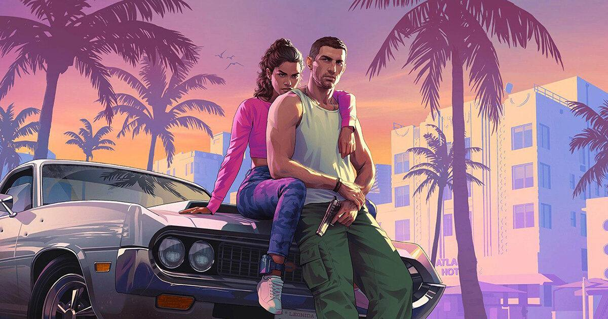

GTA 6 launches at midnight tonight — Vice City is open, and our Vice City tee is ready for launch night
Grand Theft Auto VI unlocks at midnight local time on Thursday, November 19, on PS5 and Xbox Series X|S — and the Vice City T-Shirt is built for the night we've all been waiting for.

Disclosure: this post contains affiliate links. I earn a commission on qualifying purchases.
Tonight's the night
Grand Theft Auto VI unlocks at midnight local time on Thursday, November 19, on PlayStation 5 and Xbox Series X|S. On the West Coast, that means 9 p.m. PT tonight — Rockstar confirmed the timing to the USA Today Network — so the wait ends before the calendar even flips for a lot of players.
This is the return to Vice City, in the state of Leonida, with two leads — Lucia and Jason — at the center of it. The launch trailer, released October 15 and captured entirely in-game on PS5, is built around the pair: Jason talking about leaving the army on bad terms, the two of them in armed set pieces all over Vice City, scored by Justice's "Flower in a Hurricane" featuring Tame Impala, SZA, and King Gizzard & The Lizard Wizard. It has pulled roughly 80 million views since it dropped.
What to know before midnight
The standard edition runs $79.99 and the Ultimate Edition $99.99, with the same November 19 date for both — there is no paid early-access window. There is no PC version at launch, and Rockstar has not announced a PC date. The install needs up to 212 GB of space, so clear room now if you haven't. The physical release is a code-in-box package with no disc inside. Buy before November 20 and the purchase includes the Vintage Vice City Pack.
Pre-loading has been open since November 10, so anyone who pre-ordered digitally should already be sitting on the download. If you're planning to watch instead of play, YouTube and Rockstar are running a 24-hour GTA VI livestream starting at midnight ET on launch day, with an RDCWorld pre-show at 11 p.m. ET tonight.
The wait is over
This one has been more than a decade in the making since GTA V, and the demand has matched the wait. Sensor Tower estimates about 12.1 million digital pre-orders worth roughly $1.18 billion before a single copy reaches a shelf, and Sony and Microsoft have both confirmed it is the most pre-ordered game in the history of their storefronts. It also arrives as the most-nominated game at The Game Awards 2026, with eight nominations including Game of the Year — two days before it even launches.
Launch-night gear: the Vice City tee
We made something for tonight. The Vice City T-Shirt ($30) is our original GTA 6 launch design — a glowing sun disc over a lit Vice City skyline, zero text, zero logos, just the vibe. It's in the TSL shop now, and it's the shirt to wear while the city loads in.
If you still need the game itself, GTA VI for PlayStation 5 is on Amazon. And if your setup needs a last-minute upgrade before midnight, Razer is where we look first.
Watch
Source: Grand Theft Auto VI Trailer 2 (Rockstar Games) — the official second trailer, released May 6, 2025, captured entirely in-game on PlayStation 5.
Sources
• GTA VI Countdown: Release Date, Platforms, Editions, Preload, and Everything Confirmed (GameFlip)
• GTA 6 comes out soon. Here's the benefit for West Coast gamers (Kitsap Sun)
• GTA 6 release date, price and pre-load: PS5 and Xbox details (PCNMobile)
• GTA VI News: Latest Verified Updates (CyberGrokr)
• GTA 6 Trailers: Every Official Trailer, Broken Down (GTA6News.gg)
• Every official GTA VI trailer and presentation, and what Rockstar showed (Vice Atlas)
Gear up: Razer — mice, keyboards, headsets and laptops.